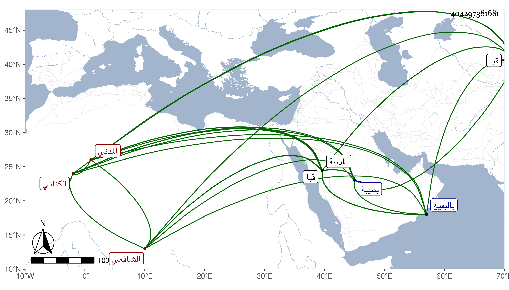

0902Sakhawi.DawLamic.ITO20230111-ara1.EIS1600.404297381681
Biography ID: 404297381681
344
عبد الرحمن بن محمد بن صالح بن إسماعيل ناصر الدين أبو الفرج ابن التقي الكناني المدني الشافعي والد أبي الفتح محمد الآتي وسبط البدر عبد الله ابن محمد بن فرحون ويعرف بابن صالح . ولد بطيبة ونشأ بها فسمع من جده لأمه قطعة جيدة من الأحكام الصغرى لعبد الحق ومصنفه الدر المخلص من التقصي والملخص ومسلسلات ابن مسدي ومن العز بن جماعة جزءا له في قبا ومن أبيه والأمين بن الشماع وإبراهيم بن الخشاب وعبد الرحمن بن يعقوب الكالديني والزين العراقي قرأ عليه تخريج الاحياء له وفي شرحه للألفية والمجد اللغوي سمع عليه قطعة من مؤلفه الصلات والبشر في آخرين ، وأجاز له في سنة خمس وستين فما بعدها ابن أميلة وابن الهبل والصلاح بن أبي عمر والكمال بن حبيب وأخوه الحسين والتقي البغدادي وابن القارىء وابن عقيل وابن كثير والأذرعي وجماعة وناب في قضاء المدينة عن قضاتها ثم استقل به من سنة اثنتين وتسعين إلى أن مات سوى ما تخلل ذلك من العزل غير مرة وكذا ولي بها الخطابة والإمامة ، وكان مشكور السيرة عفيفا لكن مزجى البضاعة فيما قال شيخنا وأما غيره فوصفه بالفضل حدث قليلا روى عنه ابنه والتقي بن فهد وأجاز لأبي الفرج المراغي حين عرض عليه . ومات في صفر سنة ست وعشرين بالمدينة وصلى عليه بالروضة ثم دفن بالبقيع ، وترجمه شيخنا في إنبائه باختصار جدا ، والمقريزي في عقوده وطوله .
